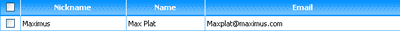
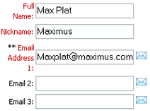
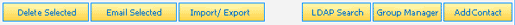
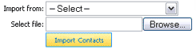
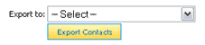
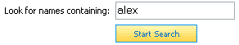
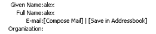

The Addressbook allows you to store all your personal and business contacts in your EMU Webmail account, making your addressbook
just as easily accessible as your email. Common Addressbook tasks include:
Navigating the Addressbook
The layout of the Addressbook is similar to that of the Inbox, as all contacts in the Addressbook are represented as a separate row in a
contact list. Each row includes a checkbox, the contact nickname, full name, and email address.

Clicking the linked nickname will allow you to view and edit the selected contact through the Contact Editor. You can store as many contacts
in your Addressbook as you wish.
Adding & Editing Contacts
Adding and editing contacts are both quickly accomplished through the same interface, the Contact Editor. To add a new contact, click the "Add
Contact" button located in the contact options area which appears both above and below the contact list. Edit or view an existing contact by
clicking on the linked "nickname" text of the appropriate contact.

Once in the Contact Editor you will see numerous fields to drop in all sorts of information about your contact. All fields are optional, except
for "Full Name", "Nickname", and "Email Address 1", so you only need to enter what you wish. Fill the "Nickname" field with a unique, easy-to-remember
name, as it offers a simple way of composing a new message elsewhere in the interface.
The "Email" fields are important to note as well. Be sure to enter the email address you use most often for the contact in the "Email Address 1" field,
while dropping any less frequently used addresses in the optional fields. "Email Address 1" is the primary address used when a contact's nickname is
used elsewhere in EMU Webmail. For example, by entering a contact's nickname in the "To" field on the Compose Message
page, that email will be sent to the address listed in the "Email Address 1" field.
For your convenience, red email icons have been added next to each email field which, when clicked, start a new email with the appropriate email
address automatically dropped into the "To" field.
Deleting Contacts
Contacts may be deleted at any time by placing a checkmark in the checkbox next to the appropriate contact(s) and clicking the "Delete Selected"
button. Note, please delete carefully as once a contact has been deleted, it is permanently lost.

Emailing Contacts
There are two ways a new message can be initiated from the Addressbook. The first method is by placing a checkmark in the checkbox next to the
appropriate contacts and clicking "Email Selected". Doing so will immediately take you to the Compose Message
page with all the selected contacts populating the "To" field.
The second method is by clicking on a nickname from the contact list and, in the resulting Contact Editor, clicking one of the red email icons
located next to each of the three email fields. Doing so will immediately take you to the Compose Message
page with the appropriate email address populating the "To" field.
Importing & Exporting Contacts
The import/export feature is a powerful feature in EMU Webmail which allows you to transfer contacts to and from other popular email or addressbook
applications. For example, you may be currently using Outlook and would like to switch to a web-based mail service or would simply like to move your
addressbook online. Similarly, you may desire to back up your EMU Webmail Addressbook or import a copy of it to Outlook.

Importing takes only a few moments and is fairly simple. Consult the documentation of the application that currently holds your contact list for
information on exporting that list. Be sure to export your contacts in a .CSV (comma separated values) format and save the file to your harddrive.
On the Addressbook Import/Export page in EMU Webmail, accessible by clicking on the "Import/Export" button in the Addressbook, select the application
or site from which your contact list originates. Then click "Browse" and select the appropriate file from your harddrive. Click "Import Contacts".
Importing should take only a couple of seconds, after which your Addressbook will load with your imported contacts populating the contact list.

Exporting your EMU Webmail Addressbook is equally simple. On the Addressbook Import/Export page in EMU Webmail, select the application or site to which
your contact list will be imported, then click "Export Contacts". Your entire addressbook will be saved in a file called "emumail_addressbook.csv" which
you may import into another system, assuming they accept standard CSV formats. Consult the documentation of your third-party software for instructions
on importing a .CSV (comma separated values) formatted contact list.
Searching for Contacts
If your Administrator has configured EMU Webmail to use an LDAP directory, you will be able to perform a search of this directory for other users.

From the Addressbook, click the "Internet Search" button from the contact options. On the resulting "Internet Search" page, enter the name of the
name of the individual you are looking for in the search field provided and click "Start Search". If any matches are found, the page will refresh with a
list of contacts.

Included in each result is the contact information and two options, "Compose Mail" and "Save in Addressbook". Clicking "Compose Mail" redirects you to
the Compose Message page with the appropriate email address populating the field.
Clicking "Save in Addressbook" will launch the Contact Editor with the available information populating the appropriate fields on the page. From
that point, simply clicking "Save" will add the new contact to your Addressbook.